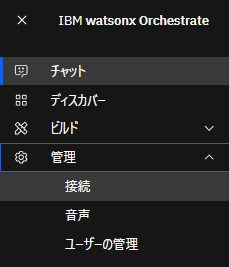
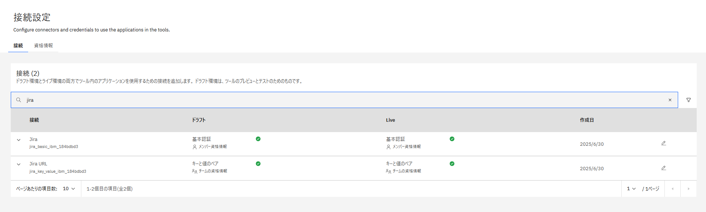
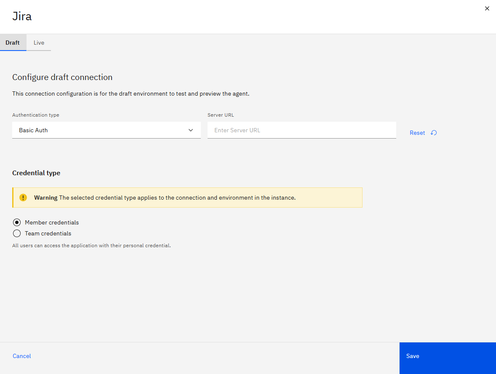
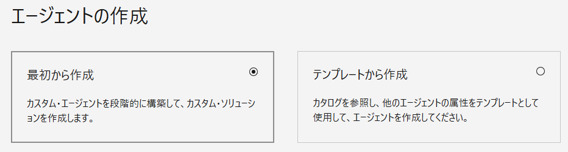
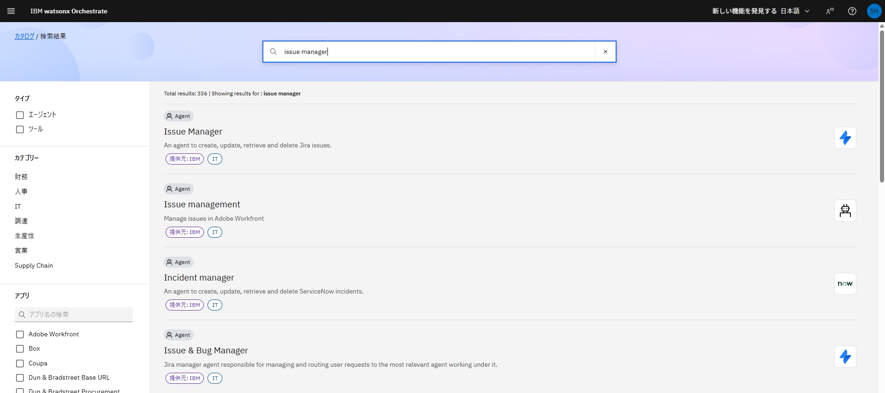
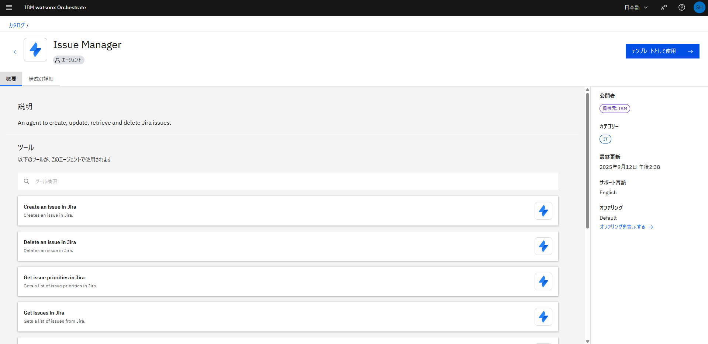
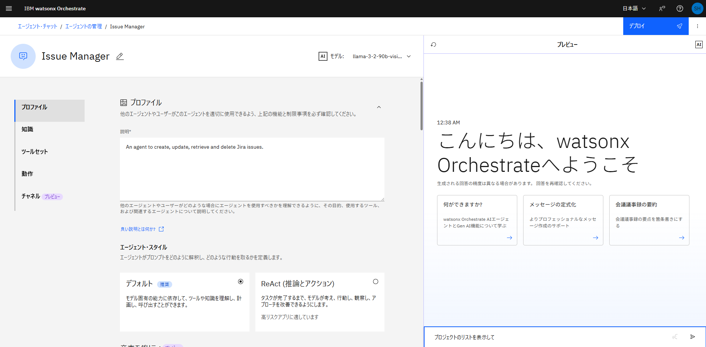
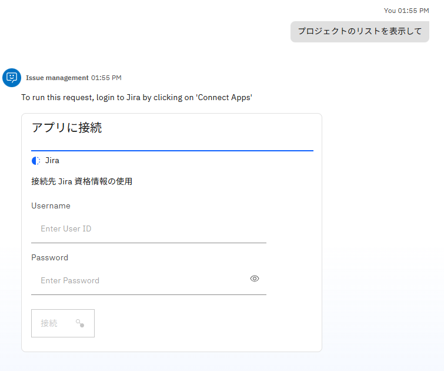
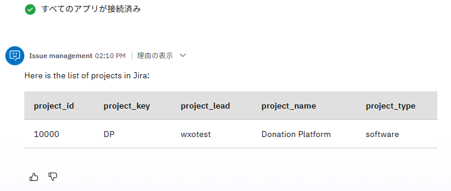

プリビルド・エージェント/ツールを使ってみよう！
watsonx Orchestrateには、事前定義されたエージェントやツールがカタログに多数含まれ、テンプレートとして利用することが可能です。 また、接続(Connections)という仕組みを使うことで、接続情報を柔軟に管理、設定することが可能です。 このLabでは、Jiraへ接続可能なエージェントをテンプレートから構成し、利用する手順について説明します。
接続の設定
定義済みの接続を確認し、Jiraに接続するために必要な構成を行います。
1. 左側のメニューより、管理 > 接続を選択してください。

2. 接続の管理画面が表示されます。
3. 検索ボックスに、jiraと入力してください。Jiraに関する2つの接続が表示されるはずです。
{kind=link}
- Jiraは基本認証に必要な情報を設定する接続で、ユーザー毎に異なるユーザーIDとパスワードを設定します。このように、ユーザー毎に異なる値を設定する場合には、メンバー資格情報を使用します。
- Jira URLは、接続先のドメインを設定するためのキーと値のペア型の接続で、全体で共通の値を設定します。これをチームの資格情報と呼びます。チームの資格情報は管理者のみ設定可能です。

4. Jira URLの設定（テナント管理者のみ実行してください。共有のテナントを使用する場合は、管理者に設定を依頼してください。既に接続済みの場合はスキップして、Step5のJiraの設定に進んでください。）
Jira URLの右側の編集ボタンをクリックしてください。設定画面が開くので、チームの資格情報が選択されていることを確認してから、以下の値を設定し、接続ボタンをクリックしてください。
なお、設定値はDraft/Liveの2つの値を設定することで、開発画面とデプロイされたToolで異なる接続情報を使い分けることが可能です。今回はDraftのみを設定してください。
{kind=link}
- Base url :講師から共有されたドメイン名
接続が成功したら、保存ボタンをクリックしてください。
5. Jiraの設定
次にJiraの右側の編集ボタンをクリックします。認証タイプとしてはBasic Auth、メンバー資格情報が選択されていることを確認し、保存ボタンをクリックしてください。

{kind=link}
{kind=link}
エージェントの作成
カタログにあるJiraを用いるAgentをテンプレートにしてAgentを作成します。
1. 左側のメニューからビルド > エージェント・ビルダーと進み、エージェントの作成ボタンをクリックしてください。
 2. Agent作成のウィザードが開くので、右側のテンプレートから作成を選択してください。
2. Agent作成のウィザードが開くので、右側のテンプレートから作成を選択してください。

3. 検索Boxにissue managerと入力し、エンターキーを入力してください。Jiraを使用するエージェントが表示されるので、Issue managerを選択してください。

4. エージェントの詳細が表示されるので、内容を確認し、右下のテンプレートとして使用をクリックしてください。

5. エージェント作成されます。共用の環境を使用している場合は、エージェントの名前の右側の編集ボタンをクリックし、あなたの名前を付けるなど、区別がつくようにしてください。
6. エージェントの設定を確認し、利用可能なツールや、動作の記述内容を確認してください。特に動作についてはかなり細かく設定がされていることが分かります。
{kind=link}
{kind=link}
{kind=link}
エージェントの実行
- 右側のチャット欄にプロジェクトのリストを表示してと入力してください。
 - メンバー資格情報が設定されており、まだ接続が行われていない場合には、以下の様にパラメータを設定するフォームが表示されます。
 - Username,Passwordに講師から共有された値を入力して、接続ボタンをクリックしてください。UsernameやPasswordをコピー＆ペーストする際には、スペースなどが付加されていないことを確認してください。
- 正しく接続された場合には、プロジェクトの一覧が表示されます。ツールの初回利用時には、バックグラウンドで導入を実施するので、時間をおいてから再度実行してくださいというメッセージが表示される場合があります。その場合は指示に従ってください。
 -
Issue Manaement Agentはissueの取得や作成など他にも機能があります。その他のToolも実行して動作を確認してください。例えば以下のような処理が可能です。
- issueの表示
- issueの作成
- issueの削除
{kind=link}
{kind=link}
{kind=link}
お疲れさまでした！
このハンズオンでは、接続を構成する方法を学び、プリビルドのエージェントをテンプレートにエージェントを作成する手順を実行しました。